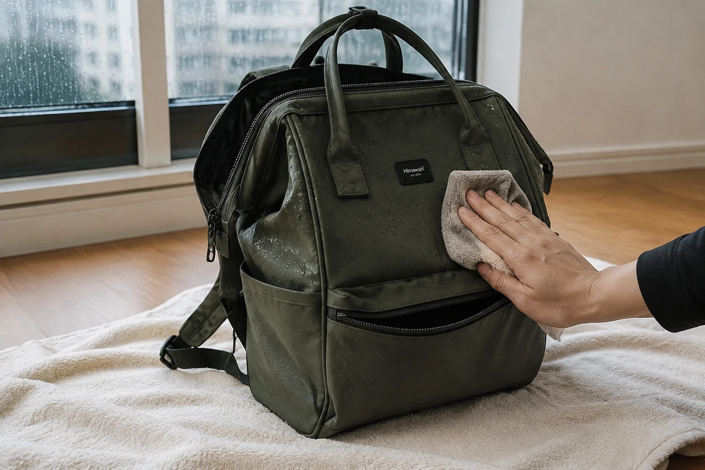

비를 맞은 가방은 내용물을 꺼낸 뒤 살피기

비를 맞고 집에 들어오면 백팩을 현관에 내려놓은 채 다른 일을 시작하기 쉽습니다. 겉면의 물기만 보고 괜찮다고 생각할 수도 있지만 안쪽과 내용물의 상태는 직접 확인해야 합니다. 젖은 가방을 다루는 순서는 무엇을 먼저 보호하고 어떤 관리 조건을 따라야 하는지 정하는 일입니다. 제품의 방수 성능을 이름이나 외형에서 짐작하기보다 지금 어떤 면에 물기가 남았는지 확인하는 것이 출발점이 됩니다. 가방과 들어 있던 물건은 각각 살펴야 합니다.
먼저 실제 주머니를 열어 내용물을 꺼냅니다. 개인 문서와 전자기기, 옷과 용기를 각각 놓고 현재 상태를 확인하세요. 젖은 물건은 마른 물건과 구분해 두고 각 제품의 취급 안내를 따릅니다. 전자기기에 물기가 닿은 경우에는 가방을 말리는 방법으로 처리했다고 생각하지 않고 해당 기기 안내에서 확인할 범위를 읽어야 합니다. 종이나 개인 소지품의 보관도 그 물건의 상태에서 판단합니다. 한 가방에 담겨 있었어도 필요한 대응이 모두 같은 것은 아닙니다.
가방의 어느 면이 젖었는지
젖은 상태는 가방을 놓았던 방향에 따라 보이는 범위가 달라집니다. 겉면은 마른 것처럼 보여도 접힌 바닥이나 작은 주머니는 별도로 살펴볼 면입니다. 꺼낸 물건을 마른 소지품, 물기가 있는 소지품, 집에서 보관할 종이로 나누어 놓으면 가방이 비어 있는 동안 각각 정리할 수 있습니다. 어느 면에서 물기가 보였는지 사진이나 짧은 메모로 남겨도 됩니다. 이후 관리가 필요하면 가방 전체가 젖었다는 말보다 위치를 구체적으로 설명할 자료가 됩니다.
라벨과 제품 안내에서 물기를 정리하고 건조할 방법을 확인합니다. 사용할 수 있는 천이나 건조 방식, 피해야 할 조건이 있다면 해당 지침을 따릅니다. 소재 이름만으로 완성된 가방의 모든 부분에 같은 방법을 정하지 않습니다. 안쪽에 분리 가능한 물건이 실제로 있다면 안내된 방법으로 확인하고, 고정된 부품을 말리기 위해 임의로 빼지 않습니다. 제품의 조건이 읽기 어렵다면 현재 상태의 사진과 모델 정보를 준비해 문의할 수 있습니다.
비와 함께 오염이 보이면 물기를 정리하는 일과 흔적을 처리하는 일을 나누어 생각합니다. 신발이나 바닥에 닿았던 면만 표시하고 가방 전체를 다시 닦는 목표를 앞세우지 않을 수 있습니다. 젖은 주머니와 깨끗한 종이가 닿았던 위치도 살펴봅니다. 지금 사용할 방법은 제품의 관리 표시가 허용한 범위에서 정하되, 새 흔적이 어느 물건과 함께 있었는지 알아두면 다음 운반 배치를 바꿀 이유도 생깁니다. 비를 맞은 상태와 사용한 용기에서 생긴 흔적을 원인이 같다고 정하지 않습니다.
비 오는 날 사용할 개인 가방의 예시로 Himawari No.2301 제품 정보를 참고할 수 있습니다. 이 모델의 실제 관리 안내를 읽고 자신의 가방에서 젖은 면을 대조하는 방식입니다. 비를 맞은 연출 장면을 방수 기능의 시험 결과로 생각하지 않습니다. 날씨가 바뀌는 일정이라면 출발 전에 개인 문서와 연락 도구를 어떤 묶음으로 운반할지 준비하고, 귀가 뒤 실제 상태를 확인할 수 있도록 물건의 위치를 정해둘 수 있습니다.

말리는 자리와 다시 담는 시점
말리는 자리에는 가방을 놓을 공간뿐 아니라 꺼낸 물건의 자리도 필요합니다. 식탁에서 내용물을 비웠다면 가족이 쓰는 면을 계속 차지하지 않도록 개인 소지품을 정한 위치로 옮깁니다. 가방은 제품에 적힌 건조 조건에 맞는 자리에서 자연스럽게 놓고 다른 상자나 옷이 누르지 않게 합니다. 물기가 보였던 주머니가 어떤 방향으로 열려 있는지도 봅니다. 젖은 물건을 하나로 모아두었다가 다시 가방에 섞지 않도록 가방과 내용물의 작업을 따로 이어갈 수 있습니다.
다음날 아침 같은 가방을 써야 하는 일정을 가정해봅니다. 아직 관리할 부분이 남았다면 출근 시간에 맞춰 처리를 서두르는 대신 다른 가방으로 필요한 묶음을 옮길 수 있습니다. 옮길 것은 기기와 파일, 개인 소지품이며 비 오는 날에만 쓰던 물건은 그 상태에 맞게 정리합니다. 새 가방에서 열쇠와 확인 자료를 실제로 꺼내보면 임시 배치도 이어집니다. 원래 가방의 준비가 끝났는지와 다음 출발에 필요한 짐이 무엇인지는 나누어 판단할 수 있는 문제입니다.
건조 뒤에는 물기가 보였던 위치를 다시 봅니다. 표면의 현재 모습과 여밈, 끈의 상태를 살피고 문의할 부분이 있다면 작업 전의 기록과 함께 남깁니다. 비를 맞은 시간이 언제였는지, 어느 면을 어떻게 정리했는지 알아두면 설명하기 쉽습니다. 가방을 말리는 동안 소지품을 옮겼다면 그 위치도 회수할 범위에 포함합니다. 열쇠와 카드가 식탁의 다른 물건 아래에 남아 있지 않은지 보면 관리 후 첫 외출에서 다시 찾을 일이 줄어듭니다.
다시 채울 때는 비 오는 날만 쓴 물건과 평소의 소지품을 나눕니다. 사용한 우산이나 옷은 각 물건의 관리 안내에 따라 정리하고, 가방에 임시로 넣은 포장과 종이는 꺼냅니다. 다음 외출에서 필요한 자료는 보관 장소에서 다시 챙길 수 있게 둡니다. 가방을 말리던 동안 다른 곳으로 옮긴 열쇠와 카드도 확인하세요. 물기를 정리한 뒤 필요한 소지품의 위치가 원래 방식으로 돌아와야 다음 출발에서도 찾을 범위가 유지됩니다.
비가 예상되는 다음 일정에서는 이번에 실제로 젖었던 위치를 참고할 수 있습니다. 개인 용기에서 생긴 물기인지 비를 맞은 면인지 확실하지 않다면 원인을 단정하지 않고 운반 구성을 다시 봅니다. 제품의 사용과 관리 조건은 현재 안내에서 확인하고 필요한 별도 포장의 용도도 따로 읽습니다. 겉모양으로 기능을 기대하기보다 중요한 소지품의 묶음과 귀가 후 확인할 면을 알고 있으면 준비가 구체적입니다. 젖은 날의 가방은 내용물을 꺼내 각 물건의 상태부터 살피는 순서로 정리하면 됩니다.